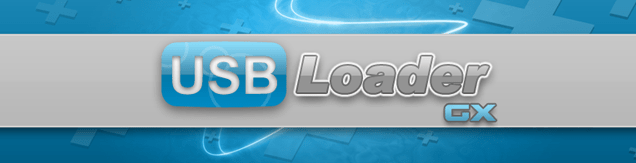

USB Loader GX
Solltest du hinsichtlich dieses Tutorials Hilfe benötigen, trete bitte dem RiiConnect24 Discord-Server bei (empfohlen), oder kontaktiere uns per E-Mail unter [email protected].
Die ist eine Kurzanleitung zur Verwendung des USB Loader GX, einem beliebten USB-Loader für die Wii, welcher verwendet wird um Spiele direkt von einem USB-Laufwerk aus zu spielen.

Voraussetzungen
- Eine Wii
- Ein USB-Laufwerk
- USB Loader GX
Stelle sicher, dass du vorher cIOS installiert hast!
Wenn du Windows verwendest empfehlen wir dir Spiele mit Wii Backup Manager zu kopieren. Falls du macOS verwendest empfehlen wir dir Witgui.
Wenn Sie Spiele im NKit-Format spielen möchten, verwenden Sie dieses Programm um diese zuerst in eine ISO umzuwandeln. Sie können auch eine Entwicklungs-Build von Dolphin verwenden: Rechtsklick auf ein Spiel und “Convert File” anklicken um es zu konvertieren.
Um Spiele ohne Wii Backup Manager oder Witgui zu kopieren, erstelle einen Ordner namens “wbfs” im Stammverzeichnis deines USB-Laufwerks und kopiere die Spiele in diesen Ordner.
Zum Spielen empfehlen wir die Verwendung einer externen Festplatte für deine Wii. USB-Sticks sollten zwar auch funktionieren, jedoch sind externe Festplatten empfehlenswert da sie zuverlässiger sind und auch mehr Spiele speichern können.
Stelle sicher, dass dein USB-Laufwerk als FAT32 oder NTFS formatiert ist. Formatiere es nicht mit einem anderen Dateisystem wie z. B. extFS oder WBFS, letzteres ist ein altes Format zum Speichern von Wii-Spielen.
Anleitung
Herunterladen
- Entpacke USB Loader GX und verschiebe es in den
apps-Ordner auf deinem USB-Laufwerk bzw. deiner SD-Karte. - Verbinde dein USB-Laufwerk und deine SD-Karte (falls du eine benutzt) mit deiner Wii und starte USB Loader GX über den Homebrew-Kanal.
Einstieg
Es gibt keine Anleitung zum Nutzen der USB Loader GX-Anwendung. Dies soll dir den Einstieg erleichtern, um dir dabei zu helfen, zu lernen, wie man sie verwendet. Du solltest in der Lage sein, alle großartigen Funktionen von USB Loader GX selbst herauszufinden, indem du es benutzt.
- Wenn USB Loader GX “Waiting for HDD…” mit einem 20-Sekunden-Countdown anzeigt, ist es wahrscheinlich, dass es das USB-Laufwerk nicht finden kann. Versuche, das Programm zu verlassen und erneut zu starten, nachdem du das USB-Laufwerk mit dem anderen Anschluss der Wii verbunden hast.
- Du kannst die 1-Taste auf deiner Wii-Fernbedienung drücken, um einen Dialog zum Herunterladen von Spiel-Covern und Artwork von GameTDB zu öffnen. Es kann eine Weile dauern, die Spiel-Cover und Artwork herunterzuladen, je nachdem, wie viele Spiele du hast.
- Es gibt WADs, die USB Loader GX öffnen können, um ihn über das Wii-Menü zu laden. Diese werden als Forwarder bezeichnet. Eine offizielle Forwarder-WAD kann hier gefunden werden und eine Version für die vWii (Wii U) kann hier gefunden werden.
- GameCube oder “custom” Wii-Spiele haben eventuell einen Custom-Banner, den USB Loader GX benutzt. Um ihn zu aktivieren, suche oder schreibe
CustomBannersURL = http://banner.rc24.xyz/in die config/GXGlobal.cfg-Datei auf dein USB-Laufwerk. Dann kannst du den “Custom Banner” herunterladen, indem du die 1-Taste auf deiner Wii-Fernbedienung drückst.
Benutzeroberfläche
Es gibt mehrere Schaltflächen in der USB Loader GX-Oberfläche.
Hauptmenü
Dies sind die Funktionen der Schaltflächen oben im Hauptmenü, von links nach rechts aufgeführt:
- Stern - Zeigt Spiele, die du als Favoriten markiert hast.
- Suche - Erlaubt es dir, Spiele über ihren Namen zu suchen.
- Sortieren - Wählt zwischen Möglichkeit, nach denen die Spiele sortiert werden.
- Plattform - Wählt aus, Spiele nach der Plattform zu sortieren.
- Kategorien - Sortiert Spiele nach Kategorien.
- Liste - Zeigt Spiele in einer Listenansicht.
- Multi-Cover-Ansicht - Zeigt Spiele in einer Multi-Cover-Ansicht.
- Cover-Karussell-Ansicht - Zeigt Spiele wie in einem Karusell aufgereiht.
- Wii-Menü-Ansicht - Zeigt Spiele wie das Wii-Menü.
- Altersbeschränkungen - Sperrt den USB Loader GX.
- Disc - Lädt ein Spiel von der Disc.
Wenn du ein beliebiges Spiel auswählst, kannst du das Spiel durch Drücken von “Start” spielen.
Es gibt auch andere Schaltflächen:
- (+)-Symbol - “Installiert” ein Spiel, d.h. es wird von der Disc geladen und gesichert.
- Zahnräder - Einstellungen für USB Loader GX.
- SD-Karte - Liest die SD-Karte erneut ein.
- Homebrew - Lädt Homebrew-Anwendungen.
- Wii - Öffnet das HOME-Menü, welches ebenfalls beim Drücken der HOME-Taste auf der Wii-Fernbedienung angezeigt wird.
- Power-Taste - Schaltet deine Wii aus.
Mittig am unteren Bildschirmrand kannst du sehen, wie viel Speicherplatz noch auf deinem USB-Laufwerk vorhanden ist, und wie viele Spiele zu besitzt.
Continue to RiiTag
RiiTag is a customizable gamertag for your Wii that USB Loader GX can integrate with. This is optional to set up.
Fortfahren in der Seitennavigation
Wir haben viele weitere Tutorials, welche dir gefallen könnten.